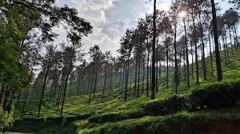
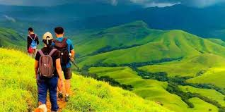

By: Dhanushree 8 B
Posted on: February 24,2026
Chikkamagaluru is more than just a destination; it is a serene escape where the air is filled with the aroma of fresh coffee and the spirit of peace. Often described as the "Switzerland of Karnataka," our village is wrapped in a blanket of emerald greenery and rolling hills that touch the clouds.

Our village is world-famous for its vast coffee estates. Walking through these plantations feels like stepping into a different world where the thick canopy of trees and the rhythmic rustle of coffee leaves create a naturally tranquil environment. The surrounding nature is so pristine that every corner looks like a painted scenery, dominated by shades of deep green and earthy browns.
Life in our village is defined by simple joys and a peaceful atmosphere. There is nothing quite like the feeling of reuniting with village friends at the local playground. These moments of play and laughter, set against the backdrop of the majestic Western Ghats, turn an ordinary day into a truly wonderful and unforgettable experience.

The environment here is untouched by the noise and pollution of city life. With its cool, refreshing climate and breathtaking mountain views, our village offers a sense of calm that is hard to find anywhere else. It is a place where the surroundings speak to the soul, making it a perfect home for nature lovers and anyone seeking a quiet retreat.